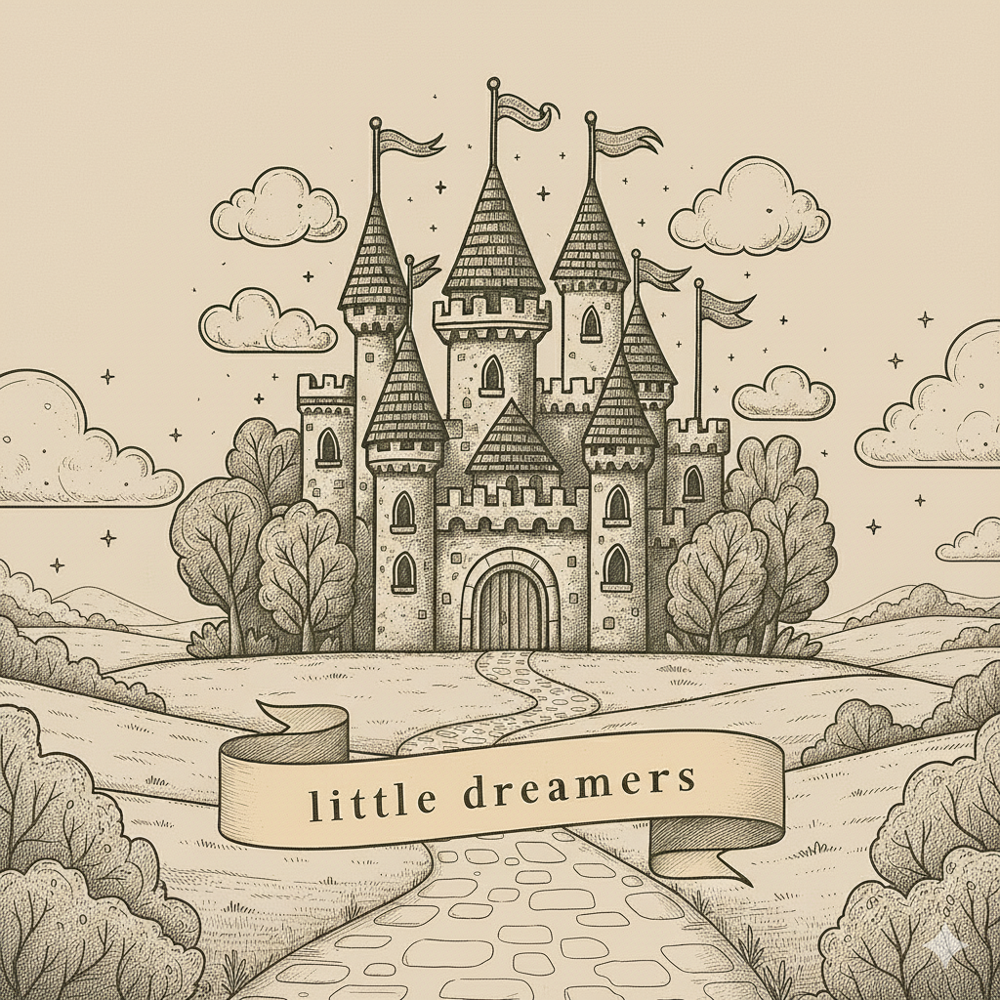

O Little Dreamers é um projeto criado por Davi Isoldi Basílio, Igor de Castro Veroneze, Pedro Ivo Fernandes Pereira, Taís Pardini Prates e Pedro Henrique Diniz Souza. Nosso objetivo é introduzir crianças ao inglês de forma lúdica e acessível, utilizando contos e histórias infantis como ferramenta de aprendizado, estimulando tanto o contato com o idioma quanto o gosto pela leitura.
